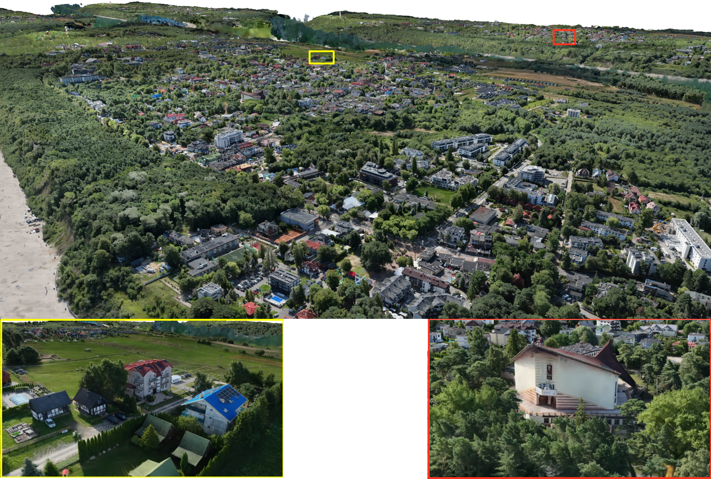
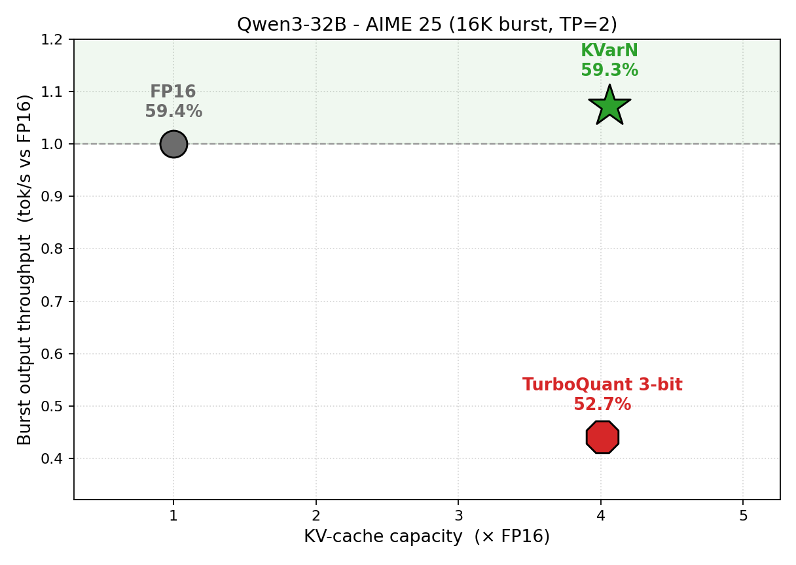

THE FRONT PAGE
EDITOR'S NOTE: A busy day in the latent space. #Judgment and craft
BREAKING VECTORS
The Missing Persona in Clinical Retrieval
When retrieval-augmented generation ignores the specific clinical role of the user, the output lacks practical relevance for patient care. Fixing this requires embedding professional constraints directly into the retrieval architecture, introducing a risk of over-filtering critical edge-case data.
MODEL ARCHITECTURES
NEURAL HORIZONS
The Closed Loop: Recursive Self-Improvement and the Death of the Artifact
As systems begin to refine their own architectures, we face a shift from deliberate software engineering to a form of automated curation. The risk is a compounding, unmapped technical debt where no single human engineer understands the underlying failure modes.
LAB OUTPUTS
INFERENCE CORNER
Six hundred million texts embedded in half an hour
An independent developer paired Rust with TensorRT to compress a massive public corpus into vector embeddings at hardware limits, proving that brute-force pipeline optimization still beats throwing extra parameters at distributed systems. The trade-off is a familiar lack of architectural flexibility; changing the model or chunking strategy mid-stream requires tossing the entire pipeline.

Gaussian Point Splatting trades structural geometry for rapid inference
By decoupling scene representation from traditional polygon meshes, the technique achieves remarkable rendering speeds but introduces a dangerous tolerance for structural inaccuracy. The shift signals a broader willingness among graphics engineers to abandon geometric rigor for immediate visual utility.

Huawei bypasses Python overhead with native vLLM fork for KV-cache quantization
By baking INT4 and INT8 quantization directly into a C++ backend for vLLM, KVarN recovers memory bandwidth without the typical latency penalties of high-level abstractions. It is a reminder that when hardware constraints bite, the only real solution is moving back down to the metal, though the maintenance burden of maintaining a custom runtime fork remains a steep tax.